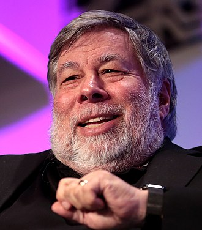
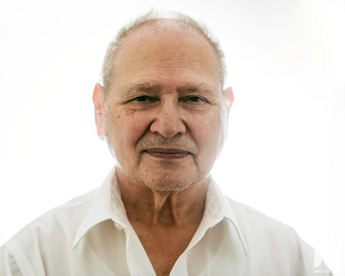

1955-2011

Paul Jobs (February 24, 1955 – October 5, 2011) was an American entrepreneur, industrial designer, business magnate, media proprietor, and investor. He was the co-founder, chairman, and CEO of Apple; the chairman and majority shareholder of Pixar; a member of The Walt Disney Company's board of directors following its acquisition of Pixar; and the founder, chairman, and CEO of NeXT. He is widely recognized as a pioneer of the personal computer revolution of the 1970s and 1980s, along with his early business partner and fellow Apple co-founder Steve Wozniak.
1950 - present
Stephen Gary Wozniak, also known by his nickname "Woz", is an American technology entrepreneur, electrical engineer, computer scientist, computer programmer, philanthropist, and inventor. In 1976, he co-founded Apple Computer with his early business partner Steve Jobs.
1934 - present
Ronald Gerald Wayne is an American retired electronics industry business executive. He co-founded Apple Computer Company as a partnership with Steve Wozniak and Steve Jobs on April 1, 1976, providing administrative oversight and documentation for the new venture